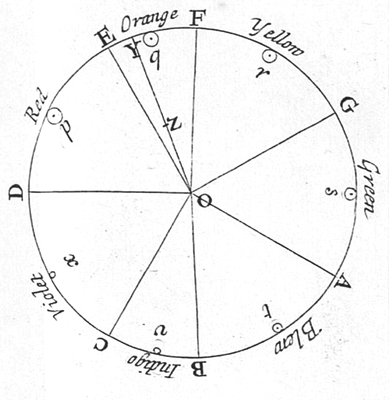
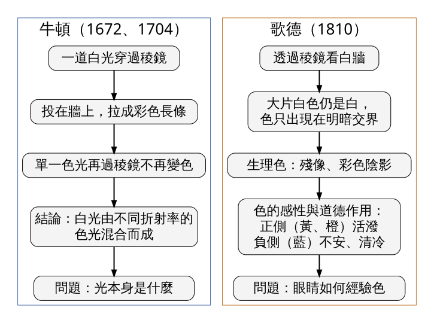
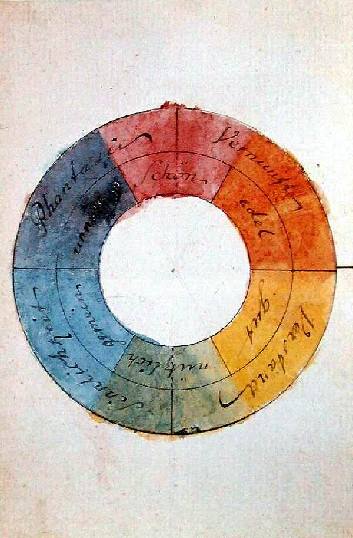
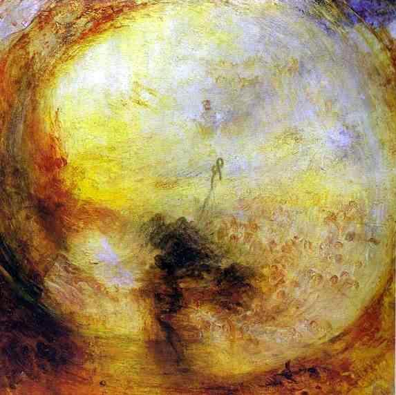

史料（依二手文獻） 歌德從義大利旅行回到威瑪之後，向耶拿的宮廷顧問 Büttner 借了稜鏡。有一次他隨手拿起稜鏡，往一面明亮的白牆看過去。他原本以為，按照牛頓的理論，整面白牆應該會散成一片彩虹。結果牆還是白的，顏色只出現在白牆碰到暗處的邊緣。歌德當下的結論是：牛頓的學說錯了。這段經過是歌德自己寫在《色彩論》歷史部分結尾的〈Konfession des Verfassers〉（作者的自白）裡；本課沒有讀到德文原文，依據的是 Helmholtz 1853 年在柯尼斯堡的演講〈Ueber Goethe's naturwissenschaftliche Arbeiten〉中的轉述，Helmholtz 寫到歌德看向白牆時「沒有出現顏色」。
史料 牛頓的實驗場景完全相反。依他 1672 年刊在《Philosophical Transactions》第 80 期的信，他在 1666 年買了一個三稜鏡，把房間弄暗，只在窗板上開一個小孔，讓一束陽光穿過稜鏡投到對面牆上。他預期看到一個圓形光點，牆上卻出現一條兩側筆直、長度約為寬度五倍的彩色長條。
一個人在暗房裡看一道細光，另一個人在亮處看一整面牆。兩人用的是同一種玻璃，問的卻是兩個問題。
牛頓：拆開光（經典理論、史料） 牛頓在 1672 年的信裡描述了後來被稱為「關鍵實驗」（experimentum crucis）的步驟：在第一個稜鏡後面放一塊開小孔的板子，只讓光譜中的一小段顏色通過，再用第二個稜鏡折射它。單一色光再次折射後不會再分出別的顏色，而光譜一端的光，折射角度總是比另一端大。他據此主張，光是由折射程度不同的光線組成，顏色是這些光線原本就有的性質；最讓他驚訝的是白色，他稱白色是一種「most surprising, and wonderful composition」（最令人驚奇的組合）。1704 年的《Opticks》裡，他把七種顏色排成一個圓，圓周依音階的七個音程比例分段，用來推算混色的結果（見圖 1）。

圖 1｜牛頓的色環，圓周依七個音程的比例分成七種顏色。來源：Isaac Newton，《Opticks》第一卷第二部命題六，1704。授權：Public domain，來源頁面
從牛頓的理論看，歌德的白牆並不構成反證。牆上每一點射來的光都被稜鏡偏折，相鄰各點的色光彼此重疊，又混回白色；只有在白與暗的交界，重疊缺了一邊，顏色才露出來。Helmholtz 在 1853 年的演講中也指出，歌德的論戰始終沒有指出牛頓解釋中的具體錯誤。
歌德：回到眼睛（經典理論） 《Zur Farbenlehre》1810 年出版，分三部分：說明他自己觀察的「教學部分」、批評牛頓的「論戰部分」，以及色彩研究的「歷史部分」。教學部分第一章談的是「生理色」，也就是眼睛自己產生的顏色。以下段落編號依 1840 年 Charles Eastlake 的英譯本。
兩人的路線可以並排來看（見圖 2）。

圖 2｜牛頓與歌德面對色彩的兩條路線。來源：本課程依 Newton 1672 年信函、Goethe《Zur Farbenlehre》1810（Eastlake 英譯 1840，第 50、65、764、777 段）繪製。
色彩的感性與道德作用（經典理論） 教學部分的第六部分標題是「色彩的感性與道德作用」。第 763 段說，要完整感受一種顏色，眼睛最好被它包圍，例如待在單一顏色的房間，或透過有色玻璃看東西。接著他把顏色分成兩側：
1809 年，歌德用水彩畫了一個小色環（見圖 3），內圈為每個顏色配上一個形容詞：紅是「美」，橙是「高貴」，黃是「善」，綠是「有用」，藍是「平凡」，紫是「不必要」；外圈再把理性、知性、感性、想像四種能力分配給相鄰的色區。這是一份價值的排列，不是光學的推導。

圖 3｜歌德的色環，內圈為各色配上形容詞，外圈標示四種心智能力。來源：Johann Wolfgang von Goethe，《Farbenkreis zur Symbolisierung des menschlichen Geistes- und Seelenlebens》，1809，水彩，Freies Deutsches Hochstift／Frankfurter Goethe-Museum 典藏。授權：Public domain，來源頁面
後來的評價（史料） Helmholtz 1853 年肯定歌德描述現象時的準確與條理，但認為那套理論不是物理學。維根斯坦在《Remarks on Colour》裡批評，歌德的說法只是一個模糊的架構，無法拿來預測任何事。
史料 1840 年，畫家 Charles Eastlake 把歌德的《色彩論》譯成英文，但刪掉了批評牛頓的論戰部分與歷史部分。透納與 Eastlake 是好友，他在自己那本英譯本上寫滿了眉批。三年後的 1843 年，他在皇家藝術學院展出一對畫：《Shade and Darkness – the Evening of the Deluge》（陰影與黑暗：洪水之夜）和《Light and Colour (Goethe's Theory) – the Morning after the Deluge – Moses Writing the Book of Genesis》（光與色（歌德的理論）：洪水後的早晨，摩西寫創世記）。後者是油畫，78.5 × 78.5 公分，現藏 Tate（見圖 4）。

圖 4｜透納《Light and Colour (Goethe's Theory) – the Morning after the Deluge – Moses Writing the Book of Genesis》，1843 年展出，油彩、畫布，Tate 典藏（N00532）。授權：Public domain，來源頁面
構圖怎麼看（依二手文獻） 先看外框。畫布是正方形，畫面卻是一個圓：中央最亮，往外一圈圈變暗，四角幾乎沉入陰影。風景畫慣用的地平線不見了，取而代之的是一個像眼睛、也像漩渦的圓形結構。依 Finley 1997 年的論文與 Warrell 2007 年的專書（經 Wikipedia 條目轉引），中央的黃色往外加深成橙、再到紅寶石般的紅，正好沿著歌德「黃、紅黃、黃紅」的正側順序走。另一幅《Shade and Darkness》畫的是洪水前夕的暗，兩幅成對展出，常被解讀為歌德正側與負側的對照。
這幅畫裡，色彩負責了平常由線條負責的工作。視線從最亮的中心被拉進去，再順著色階往外散；亮度與色相的變化本身就是構圖的骨架。對照歌德第 763 段「眼睛被一種顏色包圍」的說法，透納讓暖色系佔滿幾乎整個畫面，觀者沒有別的顏色可以停靠。
依二手文獻 透納的立場也不能簡化成「照著歌德畫」。König 與 Collins 2009 年的論文引述藝術史家 John Gage（《Colour in Turner》1969；〈Turner's annotated books: Goethe's 'Theory of Colours'〉1984）：透納的眉批很省略，在歌德與牛頓之間沒有明確選邊，也從未提出固定的配色規則。畫名寫著「歌德的理論」，畫家本人的眉批卻沒有表態。
史料 Derek Jarman 的最後一部長片《Blue》（1993）片長 79 分鐘（BFI 資料），整部片只有一個不變的藍色畫面，聲音由 Jarman、Tilda Swinton、Nigel Terry、John Quentin 的旁白與 Simon Fisher Turner 等人的配樂組成。拍片時 Jarman 因愛滋病相關併發症視力嚴重受損，旁白談的正是他逐漸失去的視覺；他於 1994 年 2 月 19 日過世。片子受著作權保護，本課不放劇照，可到 BFI 的作品頁查看資料。
拿它跟歌德對照，是因為電影院恰好實現了第 763 段的條件：燈光熄滅，銀幕上只有一種顏色，眼睛被它包圍 79 分鐘。歌德說藍色引人跟過去、讓房間顯得大而空冷；《Blue》的觀眾面對的是一片沒有物體、沒有景深線索的藍，所有的「內容」都從聲音進來。透納用暖色撐起一個有中心的圓；Jarman 用冷色鋪成一塊沒有中心的平面。
史料 Jarman 在生命最後一年寫成、1994 年出版的散文集《Chroma》，出版社頁面引述《New Statesman》的書評，說書中把他的文字和從 Ovid、Alberti 到 Goethe、Wittgenstein 的片段並置。歌德是他讀過的色彩作者之一，這部片的形式並非照著歌德的分類設計。
誤解一：歌德證明了牛頓是錯的。（已被反駁） 歌德在白牆邊緣看到的顏色是真實現象，但牛頓的理論可以解釋它：白色區域裡各色光重疊回白，只在明暗交界露出顏色。Helmholtz 1853 年的演講指出歌德的論戰沒有找出牛頓解釋中的具體錯誤；光學後來沿著牛頓的方向發展。
誤解二：物理學不採用，歌德的色彩論就沒有價值。 殘像、彩色陰影這些現象，歌德寫得具體到你今天就能在家重做一次。Helmholtz 一邊否定他的物理結論，一邊稱讚他描述的準確。對畫家、攝影師、舞台設計者來說，「眼睛看到什麼」往往比「光是什麼」更常用得上。
誤解三：「藍色讓人憂鬱、黃色讓人快樂」是歌德發現的定律。 第 764 與 777 段是歌德的主張，屬於經典理論，他沒有用實驗驗證，維根斯坦也批評這套說法無法預測任何事。歌德自己就加了條件：第 770 到 771 段說，黃色一旦被弄髒、偏向負側，或染在粗糙的布料上，愉悅感就會翻轉成令人不快的印象。
看（5 分鐘）：重做歌德的殘像 找一張白紙，在上面放一個顏色鮮豔的小物件（紅色書封、橘子、藍色便利貼都可以）。盯著它約二十秒，眼睛盡量不動，再把物件拿開，繼續看白紙原來的位置。記下你看到的顏色，對照歌德第 50 段的配對（黃與紫、橙與藍、紅與綠）。換一種顏色再做一次。
做（10 分鐘）：找一道彩色陰影 照第 65 段的做法：黃昏時，在靠窗的桌上鋪一張白紙，旁邊開一盞暖色檯燈（或點一根蠟燭），在燈與窗之間豎一支筆。慢慢移動筆的位置，直到紙上出現兩道影子：一道由燈投下、被天光微微照亮，一道由天光投下、被燈光照亮。用手機以預設模式各拍一張，不要開濾鏡。比較照片與你肉眼看到的顏色是否一樣。不在黃昏時，可以用手機手電筒代替天光，再拿一張半透明的有色塑膠片蓋在其中一個光源前。
回顧（5 分鐘）
來源 | 類型 | 查核日期 |
史料、經典理論 | 2026-11-21 | |
Goethe, Theory of Colours, tr. Charles Lock Eastlake, 1840（Internet Archive 全文，第 50、65、69、763–785 段） | 經典理論 | 2026-11-21 |
Helmholtz, Ueber Goethe's naturwissenschaftliche Arbeiten, 1853（Projekt Gutenberg-DE） | 史料（歌德稜鏡故事依此二手轉述） | 2026-11-21 |
二手文獻 | 2026-11-21 | |
史料（典藏頁） | 2026-11-21 | |
Tate：Turner, Shade and Darkness – the Evening of the Deluge, 1843 | 史料（典藏頁） | 2026-11-21 |
Wikipedia：Light and Colour (Goethe's Theory)（轉引 Finley 1997、Warrell 2007） | 二手文獻 | 2026-11-21 |
史料（學術論文） | 2026-11-21 | |
二手文獻 | 2026-11-21 | |
史料（片長、出品資料） | 2026-11-21 | |
史料（出版資訊） | 2026-11-21 | |
圖片授權 | 2026-11-21 | |
圖片授權 | 2026-11-21 | |
圖 4 授權頁：Turner, Light and Colour (Goethe's Theory)（Public domain） | 圖片授權 | 2026-11-21 |
延伸閱讀：John Gage，《Colour in Turner: Poetry and Truth》（Studio Vista，1969）第 11 章；Ludwig Wittgenstein，《Remarks on Colour》。


.JPG){kind=link}